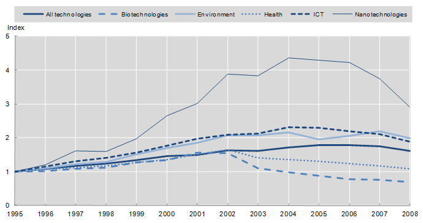
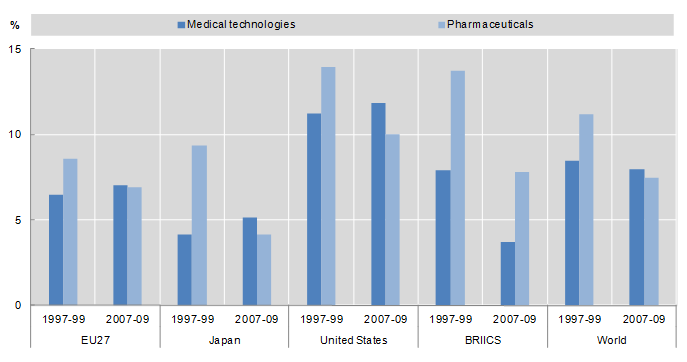
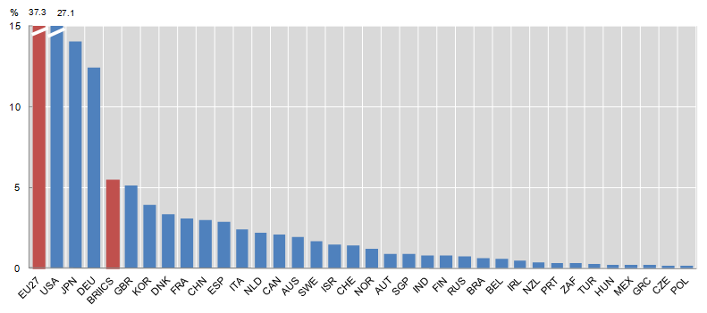

Patent data - Emerging technologies
Patent-based indicators are a unique means—sometimes the only means available—to track the rise of emerging technologies (e.g. nanotechnology, biotechnology). Patent data can be used in conjunction with data on scientific publications. Business surveys, by contrast, usually come at a later stage of development, as they require precise advance knowledge of the field (notably of the active entities). Particular technical fields can be built up by using keywords or by searching in abstracts and patent descriptions. The detailed information provided in patent documents also permits the identification of the companies or agencies active in these fields, the modes of invention (e.g. inter-institutional collaboration) and the mapping of technology clusters.
Characteristics of patent data for analysing emerging technologies
Patent information data for classification by technology field
As patents cover mainly technical inventions, they are a natural source of data regarding technical change. In many cases, they are in fact the only reliable source. This makes a good case for investigating new, emerging technical fields, which are not yet stabilised (i.e. which do not yet have an operational definition) and therefore are not specifically covered by business surveys and other datasets.
Moreover, because of their broad and long-term coverage, patent data are useful for examining how technologies behave over time and for identifying technology breakthroughs, cross-fertilisation between fields and other phenomena.
Patent documents contain two types of data which can be used for classifying patents in particular fields: a technical class code and textual information (title, abstract, claims and description). Sometimes other information is also used, e.g. applicant information or references.
To facilitate the search of prior art, patent offices classify patents according to their subject matter. These codes are reported on the patent document’s front page. The classifications have been established from a technical point of view in order to retrieve patent documents that reflect the state of the art in a particular field.
In view of the international dissemination of patent information, a common international system has proved useful. The International Patent Classification (IPC) system grew out of the 1971 “Strasbourg Agreement Concerning the International Patent Classification” (WIPO 1971) as an internationally acknowledged method of classifying patents for inventions, including published patent applications, utility models and utility certificates. Currently the IPC is used in more than 100 countries as the major or, in some instances, the only form of classifying these documents. The purpose of the IPC system is to group patent documents according to their technical field, whatever the language and terminology.
Methodological approaches for classification by technology field
The information from IPC constitutes a first reference for identifying patents in a specific technical domain. It is not enough, however, for all uses of the data; since analytical or policy interest are not factors that are assigned or easily identifiable in patent classifications, e.g. for ICT (information and communication technology), biotechnology or nanotechnology. Such aggregates have to be reconstructed on the basis of the available information: that is, the IPC code or the textual data available.
The first step is to have a clear and operational definition of the technical field of interest. This description will be complemented by keywords that reflect the content of the field and are used by engineers working in the field. The definition and keywords may evolve over time, as the technology evolves. The next steps are as follows:
- Search for such keywords in the definitions of IPC (or other technical classification) codes, and consider as patents belonging to the field all documents which belong to one of the selected codes.
- Search for keywords in the text of patents (in the title, the abstract, etc.).
- Adopt a mixed solution, e.g. by looking for keywords in IPC codes or checking manually the relevance of the results.
- Get confirmation from a technology expert that the set of documents identified by these methods truly meets the intended criteria of the desired sample of patents.
For instance, at the EPO, the identification of nanotechnology patents involved a series of steps. First, a nanotechnology working group (NTWG) was created in 2003. At the beginning, it worked on the definition of nanotechnology in order to watch trends in nanotechnology patents. It then identified nanotechnology patents through keyword searches, consultations with nanotechnology experts at the EPO and peer reviews by external experts. Patent applications from 15 countries or organizations were analyzed and tagged to class Y01N.
The OECD has designed definitions of various technical fields: ICT, biotechnology, space-related technologies, environmental technologies, etc. These definitions consist of: (1) a textual definition of the technical field and (2) a list of associated IPC classes. Reducing a technical field to a list of IPC classes has the advantage of simplicity of use (it suffices to identify the IPC code of a patent to attribute it to the relevant field). On the other hand, it does not allow discriminating within IPC codes, and thus increases the risk of misusing relevant documents or including irrelevant ones. The Y01N code for nanotechnology, which is attributed partly by examiners on an ad hoc basis, avoids such a drawback, but in view of the cost it cannot be extended to many other fields.
Industry classification
Patent data provides information for determining the industry classification. Patents can be used as indicators of the output of R&D or inputs to innovation at the industry level. However, patent data cannot be directly attributed to particular industries, because patent documents do not explicitly include the information that makes it possible to identify the economic sector to which the technology embodied in the patent is associated.
Methodological approaches for classification by industry
In developing the industry classification system, the attribution of patents to industries can be made in the following ways:
- Direct attribution, by ad hoc examination of the patent.
- Attribution to the patent of the industry code of its applicant (company).
- Establishing a priori (with experts) a correspondence between IPC classes and industries, and integrating this into a concordance table.
In certain cases a mix of methods has been used to maximise the quantity of information integrated in the process.
Several new methods have been developed over the last two decades. As explained by Schmoch et al. (2003), a reliable concordance should meet the following conditions: (1) international comparability, that is, it should be adaptable to other industry classifications; (2) adequate level of desegregation, which means it should allow backward breakdown of industries to technology fields; (3) strong empirical basis which should be consistent with trends in countries’ technological and production activity; and (4) it should be easily applicable to specific problems.
Two criteria can be used to designate patents’ industry affiliation: (1) patents can be allocated to the industrial sector of origin (to the main economic sector of the inventing/applicant company) or (2) they can be allocated to the sector of use (to the main industry to which the product incorporating the invention belongs).
Nearly all available concordance tables have taken the first approach. However, these classifications encounter numerous difficulties because not all inventions can be allocated to a sector or, as in most cases, some might be pertinent to different industries at the same time. The classification by main economic activity of the applying company presents problems as well: large firms in particular patent in a variety of fields that do not necessarily correspond to their main economic activity. While small companies are likely to be more specialised, their field of activity might not be accessible from any database. As patent and industrial classifications change over time, concordance tables need to be regularly updated.
An early attempt to build an industry concordance table for patents was the “Yale Concordance” developed by Evenson, Putnam and Kortum (1991) on the basis of the industry classification implemented by the Canadian Intellectual Property Office (CIPO). Between 1972 and 1995, examiners from the CIPO assigned IPC codes along with an industry of manufacture (IOM) and sector of use (SOU) code to each of over 300 000 granted patents.
Another attempt was the “OTAF Concordance”, the USPTO concordance between the U.S. Patent Classification (USPC) system and the U.S. Standard Industrial Classification (SIC) system, created in 1974. It relies on a manual review and mapping of classifica¬tion categories in the USPC, which are associated with a limited set of industry-based product fields based on the 1972 SIC. These are high-level SIC classifications which are generally at the two- to three-digit SIC level (41 industrial sectors). The concordance is based on the industry of manufacture; it is regularly updated, generally annually, to accommodate the changes and revisions that are made annually to the USPC. Efforts are being made to update this concordance to the recently adopted North American Industry Classification System (NAICS). Other work in this field includes the concordance proposed by Johnson (2002), which is based on data from the Canadian Patent Office. It includes linkages of technologies based on probabilities of matching to about 115 sectors of manufacture and use.
A more recent concordance table was designed by Schmoch et al. (2003) from the Fraunhofer Institute for Systems and Innovation Research, the Observatoire des Sciences et des Techniques (OST), and the University of Sussex, Science and Policy Research Unit (SPRU). The authors relied on the economic activity of companies to relate technologies to industries. Other decisions in generating the concordance matrix were: to include only large patents, to consider only manufacturing companies, and to include only the “principal” product group of a firm (although some large companies are multiproduct) and only first IPC class.
Schmoch and associates’ methodology involves four steps. First, a set of industrial sectors, defined by NACE (Nomenclature generale des Activites economiques dans les Communautés européennes) and ISIC (International Standard Industrial Classification) codes (two-digit level), were selected as a basis. Second, technical experts associated 625 IPC subclasses to technological categories (44 fields) and to industrial categories, according to the manufacturing characteristics of products. Third, the technical and industrial approaches were compared by investigating patent activities by technology-based fields for 3 400 large patenting firms classified by industrial sector (44 industrial sectors). This computation led to the elaboration of a transfer matrix or concordance between technology and industry classifications. Fourth, the adequacy and empirical power of the concordance were verified by comparing the resulting country structures (e.g. similarities in the distribution of a given technology across and within industries, by country and over time).
The followings are examples of classification related to industry:
- Technology Classification for Country Comparisons. Schmoch’s classification (Schmoch, 2010) is used to define technology fields in some IP indicators provided in the “OECD Science, Technology and Industry Scoreboard 2011” (OECD, 2011).
- IPC Technology Concordance Table. The WIPO technology concordance table links the International Patent Classification (IPC) symbols with 35 fields of technology. The concordance table is updated on a regular basis to reflect revisions to the IPC.
- Matching patent data and firms. A different approach is to match patent data to firm datasets and retrieve associated industry codes on their basis. However, this approach requires adequate matching of patent information with firm data.
Policy questions
Types of policy questions that can be addressed by patent data
Technology fields
In analyses of technology development, patent data have been used for studies investigating issues such as the following:
- New technical fields (emergence and evolution), e.g. polymer-based semiconductors and wind energy technologies.
- Technology life cycles (maturity of technology), e.g. tracking annual growth rates of patenting over long periods of time to learn whether there is a reduction in the rate of new breakthroughs (mature technologies: farming, motor vehicles, etc.).
- Cross-technology fertilisation (how one technology influences others), e.g. the influence of plasma technologies on electronics (new generations of chips), environmental technologies (plasma lamps).
Industry classification
The association of patents to industries allows patent data to be matched with other industry data, such as the OECD STAN (STructural ANalysis) database [1], and thus to analyse important policy issues, as shown in the following examples:
- The inventiveness of industries. This technique estimates knowledge production functions at industry level, with inputs (notably R&D) on the right-hand side and outputs (patent-based indicators) on the left-hand side (e.g. Pavitt, 1984; Ulku, 2007).
- The industry specialisation of countries. Specialization in connection with trade and production specialisation (e.g. Dosi, Pavitt and Soete, 1990; Malerba and Montobio, 2003).
- Cross-industry technology transfers Transfer of technology, for example, using patent citations associated with the source and the recipient industries.
Technology cycle time (TCT)
Based on the measure of citation lags, a company-level indicator can be computed. The technology cycle time indicates speed of innovation, or how fast the technology is turning over, defined as the median age in years of the patent references cited on the front page of the company’s patents. Companies with shorter cycle times than their competitors are advancing more quickly from prior to current technology. With semiconductors, for example, cycle times are short (3–4 years); in shipbuilding they are long (more than 10 years). The average is 8 years.
Examples of indicators in different industries
Figures 1, 2 and 3 provide examples of indicators that provide information on emerging technologies, tracking developments in technologies, environment, health, ICT and nanotechnologies.
Figure 1. Trends in patents by technology fields, 1995–2008
“Claimed priorities” (patent counts) in selected technology fields (index 1995 = 1)

Source: OECD (2011), “OECD Science, Technology and Industry Scoreboard 2011”, www.oecd-ilibrary.org/sites/sti_scoreboard-2011-en/01/05/index.html?contentType=&itemId=/content/chapter/sti_scoreboard-2011-9-en&containerItemId=/content/serial/20725345&accessItemIds=/content/book/sti_scoreboard-2011-en&mimeType=text/html; OECD calculations based on the Worldwide Patent Statistical Database, EPO, April 2011.
1. Claimed priorities refer to patents for which protection has been requested at a minimum of two patent offices. Patent counts are based on the earliest priority date, the inventor's country of residence and fractional counts. Data for 2008 are estimates based on more recent patent series.
2. Patents in biotechnologies and health- and ICT-related technologies are based on a selection of International Patent Classification (IPC) classes.
3. Patents in environment-related technologies are defined using combinations of IPC classes and codes Y02 of the European Classification (ECLA).
4. Patents in nanotechnologies are identified by the ECLA code Y01.
Figure 2. Health-related patents, 1997–99 and 2007–09
% of total PCT patent applications

Source: OECD (2011), “OECD Science, Technology and Industry Scoreboard 2011”, www.oecd-ilibrary.org/sites/sti_scoreboard-2011-en/04/02/index.html?contentType=&itemId=/content/chapter/sti_scoreboard-2011-35-en&containerItemId=/content/serial/20725345&accessItemIds=/content/book/sti_scoreboard-2011-en&mimeType=text/html; OECD, Patent Database, May 2011.
1. Data relate to patent applications filed under the Patent Co-operation Treaty (PCT), at international phase, published by the WIPO. Patent counts are based on the priority date, the inventor's country of residence and fractional counts.
2. BRIICS refers to Brazil, the Russian Federation, India, Indonesia, China and South Africa.
Figure 3. Countries' share of patents for energy generation from renewable and non-fossil sources, 2007-09
Patent applications filed under the PCT

Source: OECD (2011), “OECD Science, Technology and Industry Scoreboard 2011”, www.oecd-ilibrary.org/sites/sti_scoreboard-2011-en/04/03/index.html?contentType=&itemId=/content/chapter/sti_scoreboard-2011-35-en&containerItemId=/content/serial/20725345&accessItemIds=/content/book/sti_scoreboard-2011-en&mimeType=text/html; OECD, Patent Database, May 2011.
1. Data relate to patent applications filed under the Patent Co-operation Treaty (PCT), at international phase, published by the WIPO. Patent counts are based on the priority date, the inventor's country of residence and fractional counts.
2. Patents in technologies related to energy generation from renewable and non-fossil sources are identified using subclasses of the European Classification (ECLA) code Y02.
3. BRIICS refers to Brazil, the Russian Federation, India, Indonesia, China and South Africa.
References
- Dosi, G., K., L. Pavitt and L. Soete (1990), The Economics of Technical Change and International Trade, Harvester/Wheatsheaf, Hemel Hempstead, UK.
- Evenson, R. E., J. Putnam and S. Kortum (1991), “Estimating patent counts by industry using the Yale-Canada Concordance”, final report to the National Science Foundation, Yale University, New Haven, CT.
- Johnson, D. (2002), “The OECD Technology Concordance (OTC): Patents by industry of manufacture and sector of use”, OECD Science, Technology and Industry Working Paper 2002/5, Directorate for Science, Technology and Industry, OECD, Paris, www.oecd.org/sti/working-papers [2].
- Magerman, T., B. Van Looy and X. Song (2006), “Data Production Methods for Harmonized Patent Statistics: Patentee Name Harmonization”, KUL Working Paper No. MSI 0605.
- Malerba, F. and F. Montobbio (2003), “Exploring factors affecting international technological specialization: The role of knowledge flows and the structure of innovative activity”, Journal of Evolutionary Economics, Vol. 13/4, pp. 411–34.
- Mowery, D.C., B. N. Sampat and A. A. Ziedonis (2001), “Learning to patent: Institutional experience, learning, and the characteristics of U.S. University Patents after the Bayh-Dole Act, 1981–1992”, Management Science Vol. 48/1, pp. 73–89.
- OECD (2011), OECD Science, Technology and Industry Scoreboard 2011, OECD Publishing, Paris. doi: 10.1787/sti_scoreboard-2011-en
- OECD (2009), OECD Patent Statistics Manual, 5.5, OECD Publishing, Paris. http://dx.doi.org/ [3] 10.1787/9789264056442-en
- Pavitt, K. (1984), “Sectoral patterns of technical change: Towards a taxonomy and a theory”, Research Policy Vol. 13/6, pp. 343–73.
- Schmoch, U. (2010), “Concept of a technology classification for country comparisons”, Final Report to the World Intellectual Property Organisation (WIPO), revised November 2010, WIPO, Geneva. www.wipo.int/export/sites/www/ipstats/en/statistics/patents/pdf/wipo_ipc... [4]
- Schmoch, U., F. Laville, P. Patel and R. Frietsch (2003), “linking technology areas to industrial sectors”, Final report to the European Commission, DG Research.
- Ulku, H. (2007), “R&D, Innovation and Growth: Evidence from Four Manufacturing Sectors in OECD Countries”, Oxford Economic Papers, No. 59 (3), pp. 513-535.
- WIPO (2013), “The WIPO technology concordance table” World Intellectual Property Organization, Geneva. http://www.wipo.int/ipstats/en/statistics/technology_concordance.html [5]
- WIPO (1971) “Strasbourg Agreement Concerning the International Patent Classification” http://www.wipo.int/treaties/en/text.jsp?file_id=291858 [6]